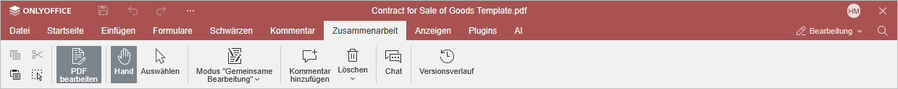

Registerkarte Zusammenarbeit
Die Registerkarte Zusammenarbeit im PDF-Editor ermöglicht den Zugriff auf die Kollaborationsfunktionen für PDF-Dateien.
Das entsprechende Fenster des Online-PDF-Editors:

Das entsprechende Fenster des Desktop-PDF-Editors:

Mithilfe dieser Registerkarte können Sie:
- zwischen den Formal- und Schnell-Bearbeitungsmodi wechseln,
- Kommentare zum PDF hinzufügen oder entfernen,
- das Chat-Panel öffnen,
- den Versionsverlauf verfolgen.